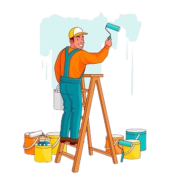
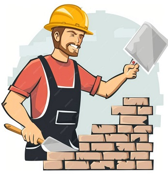
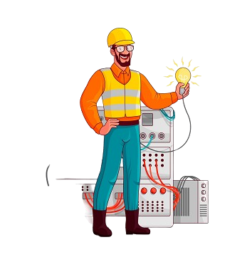

En Constructora Ayala S.A.C., ofrecemos una amplia gama de servicios diseñados para satisfacer todas sus necesidades de construcción y mantenimiento. Nos comprometemos a proporcionar soluciones innovadoras y de alta calidad, adaptadas a los requisitos específicos de cada proyecto. Nuestros servicios incluyen:

Servicio de Pintura
Pintura y decoración para interiores y exteriores. Utilizamos materiales de alta calidad y tecnicas profesionales para garantizar un acabado perfecto.
- Pintura de interiores para hogares y oficinas.
- Pintura exterior y protección contra el clima.
- Servicios de pintura decorativa y murales.
- Tratamiento y restauración de fachadas.

Servicio de Construcción
Construcción de viviendas unifamiliares, edificios de apartamentos y proyectos residenciales. Garantizamos diseños innovadores y construcción sostenible.
- Diseño y construcción de casas nuevas.
- Proyectos de renovación y ampliación de viviendas.
- Instalación de sistemas electricos.
- Paisajismo y diseño de exteriores.

Servicio de Electricidad
Ofrecemos servicios profesionales de instalación eléctrica, tanto para viviendas como para locales comerciales e industriales, garantizando seguridad, eficiencia y cumplimiento de normativas. Nuestro equipo de expertos se encarga de todo el proceso, desde el diseño hasta la puesta en marcha de los sistemas eléctricos, utilizando materiales de alta calidad..
- Diseño de redes electricas

.jpg)